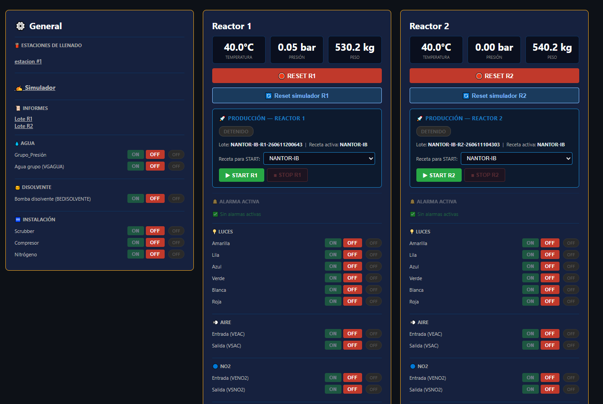
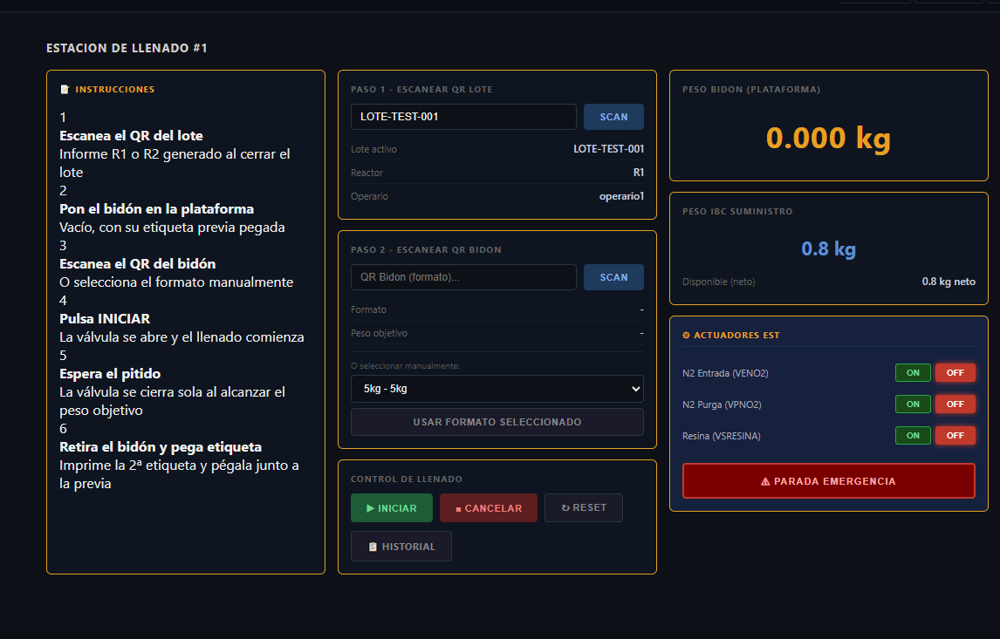

Ingeniería de Procesos Químicos y Automatización de Alta Fidelidad
Diseñamos, fabricamos tus reactores, montamos y automatizamos plantas de química fina "llave en mano".
Hacemos, casi todo.
Evaluar Viabilidad de ProyectoEl Control Absoluto del Proceso
Unificamos la ingeniería química de campo con el desarrollo informático propio. Sin dependencias externas ni licencias de terceros, creamos fábricas compactas altamente eficientes.
1. Arquitectura de Campo Mecánica
Diseño tridimensional de líneas de fluidos, cálculo estructural de reactores para química fina, dimensionamiento de vacío y sistemas mecánicos adaptados a resinas térmicas de alto rendimiento.
2. El Cerebro Operativo Nativo
Despliegue integral de electrónica industrial, buses de campo Modbus TCP/RS485 y nuestro software propietario Audire SCADA para la monitorización en tiempo real y gobernanza distribuida de la planta.
3. Trazabilidad Inmutable
Sistemas integrados de Audit Trail y control estricto de accesos por roles lógicos. Registros nativos de fases de producción que garantizan el cumplimiento de las normativas de calidad más exigentes.
Ingeniería Física Aplicada en Planta
Estructuración analítica de los flujos de trabajo de una planta industrial moderna controlada por software de precisión.
Gobernanza Analítica de Reactores
Control automatizado y supervisión de las 5 fases críticas del lote de producción: Carga, Reacción, Vacío, Destilación y Purga.
- Monitorización milimétrica de rampas de temperatura.
- Control de presiones dinámicas en camisas de reacción.
- Estabilidad molecular garantizada por lote informático.

Líneas de Transferencia y Pulmones Lógicos
Gestión automatizada e inteligente de materias primas y almacenamiento intermedio en IBCs nodriza.
- Pesos brutos y netos calculados en tiempo real.
- Lógicas de aislamiento autónomo y purga de seguridad.
- Redundancia informática de red mediante arquitectura Servidor A/B.

Estaciones de Envasado y Microllenado
Fraccionamiento seguro de fluidos de alta viscosidad y resinas técnicas mediante control ponderal predictivo.
- Inyección controlada de Nitrógeno (N₂) para evitar cavitación.
- Verificación lógica de residuos en destino e impresión de lotes.
- Estructura 100% modular y clonable sin sobrecostes de software.

Criterio de Admisión de Proyectos
No compramos problemas estructurales ni ejecutamos proyectos inviables. Mantenemos un filtro riguroso de admisión técnica: evaluamos el volumen de inversión, la coherencia de la química del proceso y el alcance logístico real antes de aceptar cualquier encargo industrial.